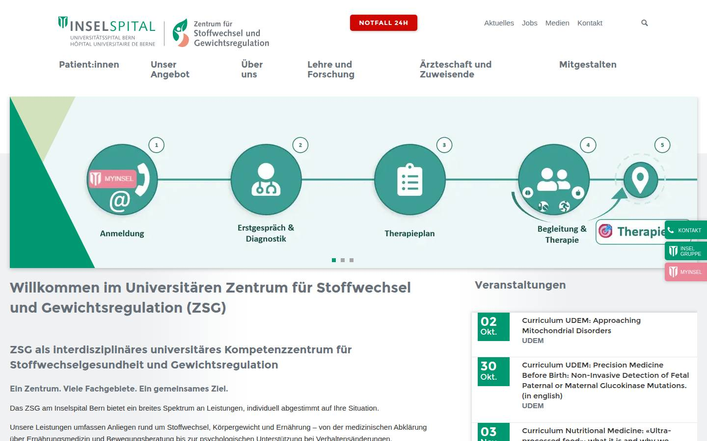
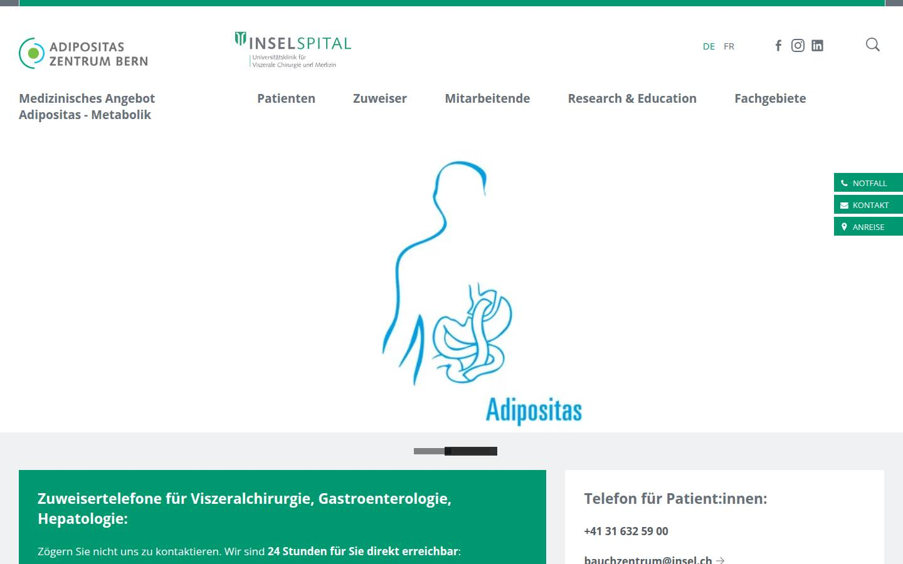
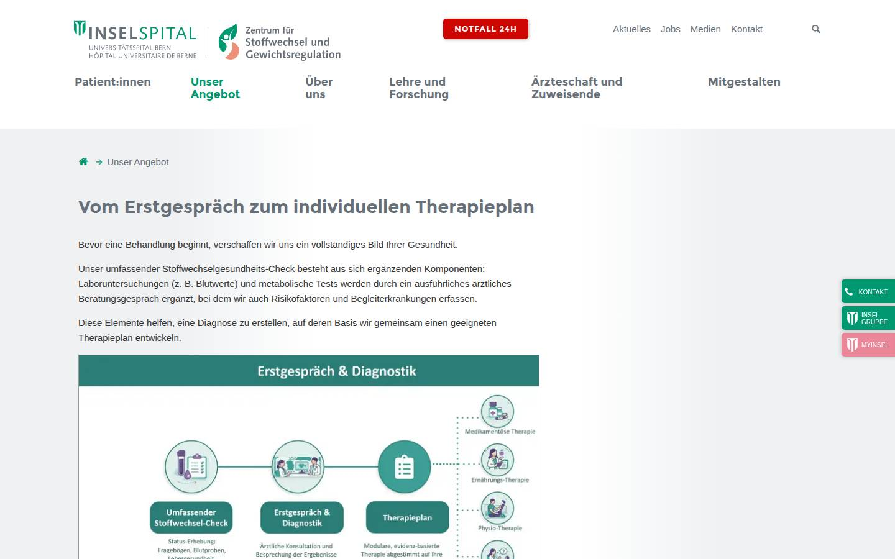
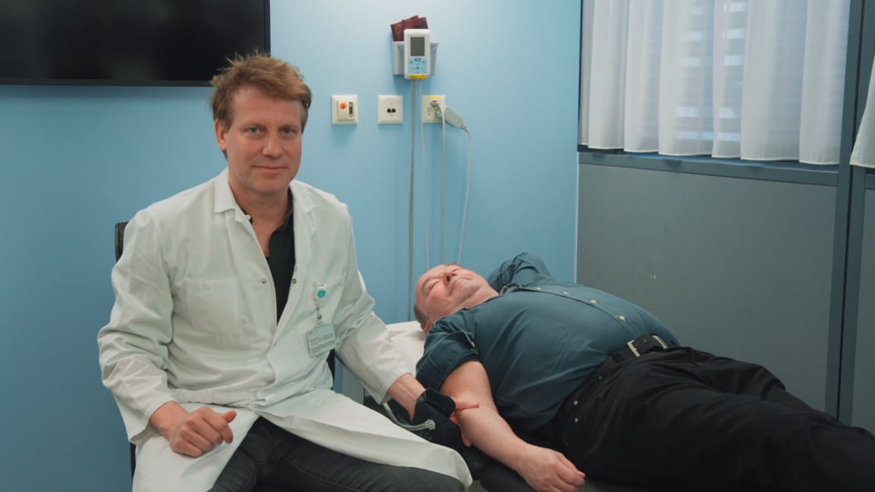
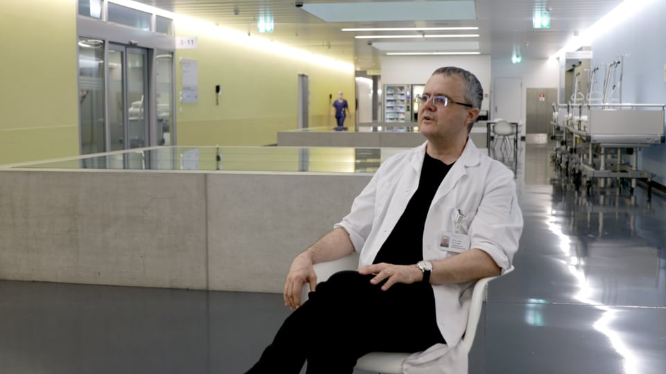
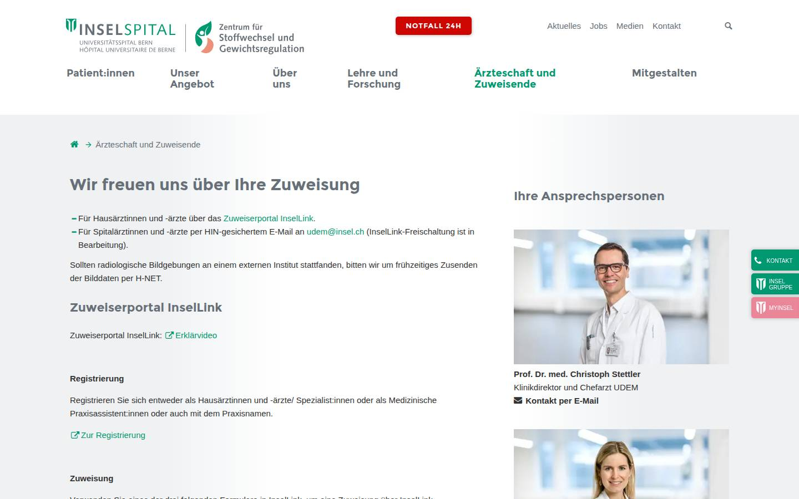
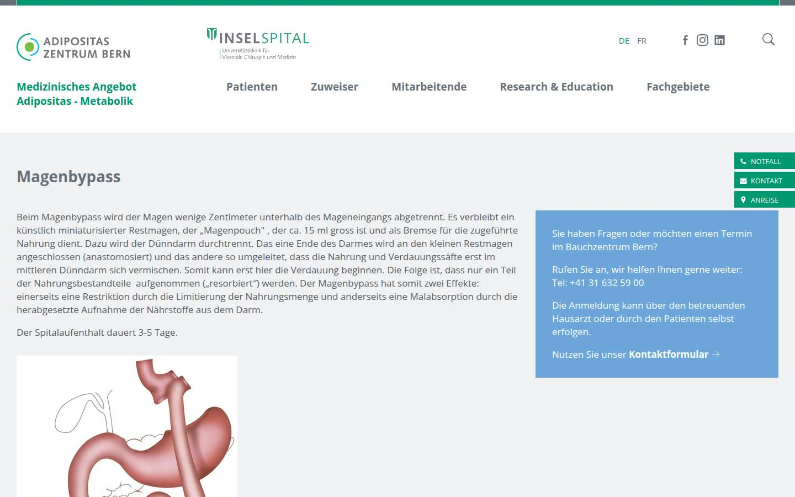

Zertifiziert nach den Standards der European Association for the Study of Obesity
Recognition as Swiss Medical Obesity Center

Wenn konservative und medikamentöse Therapien nicht ausreichen, bietet das Zentrum die gesamte Adipositaschirurgie an, interdisziplinär abgestimmt.
Spitalaufenthalt nach Magenbypass: 3–5 Tage.



